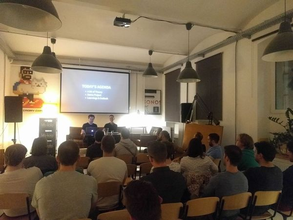

SaaS Consultant, Speaker, Teacher
I am Rainer Kern, Software Architect, SaaS Consultant and Speaker from Vienna with 15 Years of professional experience in the Java ecosystem – since 2017 mainly focussed on Kotlin.
I help SAAS product companies and development teams to ship better software, faster with fewer bugs. Unless my competitors I also like to get my hands dirty in the actual development process, performing quality assurance (code reviews) and mentoring other developers.
Apart from my work as a software architecture consultant and engineer in my role as CEO of Systemkern, I am is also engaged as a lector at the SAE University in Vienna and Co-Organiser of the Vienna Kotlin Meetup, Author of a number of software engineering classes and several software engineering related talks as well as contributor to two Kotlin libraries on Github.
Contact Me
Slides
Introduction to Algorithms
Introduction to Data Structures
Kotlin Coroutines Basics
Kotlin Coroutines Intermediary
Free Stuff

Pull Request Review – SOP
Contribution Guidelines
Software Delivery Performance Calculator - early Alpha Version
Kotlin Vienna
The Vienna Kotlin Meetup takes place every last Tuesday of every odd month (Jan, Mar, May, Jul, Sept, Nov)
Find the Schedule at kotlin.wien